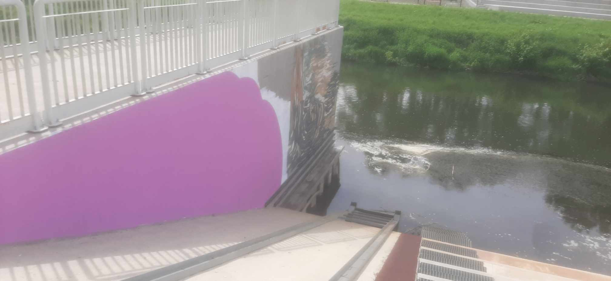
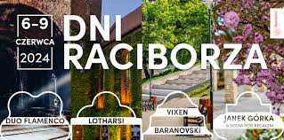

Bulwary
Nadodrzańskie
Nadodrzańskie
Bulwary są idealne do spacerów i aktywności na świeżym powietrzu. Rozciągają się po obu brzegach wzdłuż Odry, oferując wiele miejsc do odpoczynku i podziwiania krajobrazu. Zaraz obok bulwarów znajduje się także port rzeczny, który dodaje uroku temu miejscu. Spacerując bulwarami, można podziwiać malownicze widoki na rzekę i okoliczną przyrodę. Jest to doskonałe miejsce na zrobienie pamiątkowych zdjęć lub po prostu na chwilę relaksu z dala od zgiełku miasta. Raciborskie bulwary nadodrzańskie to niezapomniane miejsce, które łączy w sobie kulturę, historię i przyrodę. Stanowią one serce miasta, gdzie mieszkańcy i turyści mogą cieszyć się spokojnymi spacerami, aktywnościami rekreacyjnymi i urokami architektury. Jeśli odwiedzasz Racibórz, koniecznie poświęć czas na odkrycie bulwarów nad rzeką Odra.
Autor: redaktorka Racibórztomojemiasto Amelia Stania
Aktualności
08.05.2024

Dziś rano rozpoczęto prace nad zakrywaniem murali.
26.04.2024

Dni Raciborza 2024 Wydarzenia na bulwarach nadodrzańskich.